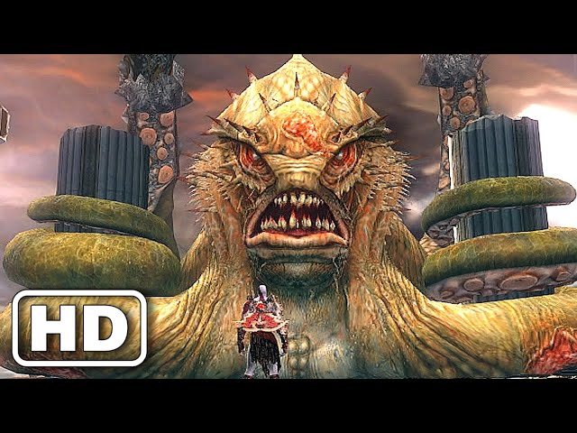
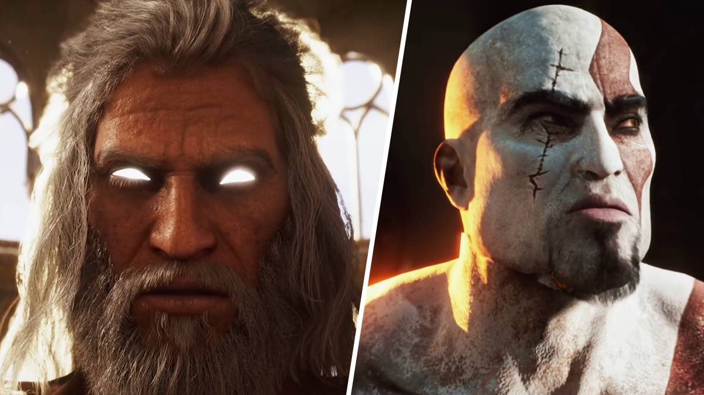
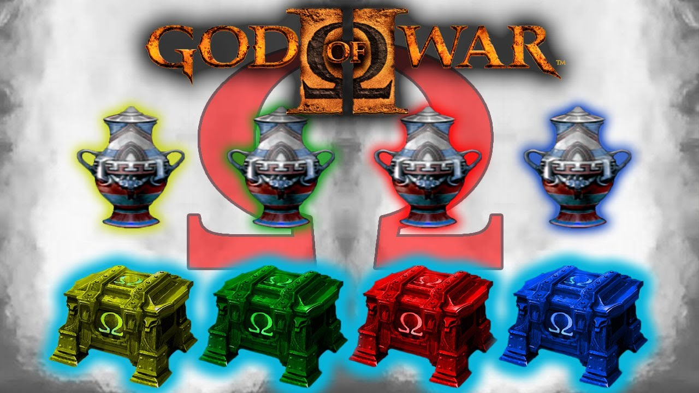

vence los primeros jefes
No te entretengas demasiado con los soldados que hay en la zona. Esquiva
los manotazos del Coloso y utiliza la Furia de Poseidón para dañarle
rápidamente (también puedes utilizar combos). Cuando el Coloso reciba
suficiente daño, se quedará atontado

Sigue venciendo los jefes
aqui se encuentra el Rey barbaro que te persigue en su caballo de fuego con su martillo,luego se encuentra
Medusa un ser gigante que te perseguira con su cola y si no estas atento te volvera piedra con su mirada y te
matara, luego esta teseo un heroe bastante veloz y con su actitud engreida en su combate se vuelve invisible
asi que tienes que estar atento a sus pisadas en el agua

vence los últimos jefes
Los ultimos jefes son el kraken un combate algo tedioso ya que el kraken te atacara con sus tentaculos
y te intentara comer, las hermanas del destinio son unas deidades muy poderosas porque estas controlan
el tiempo y kratos las quiere vencer para vengarse de su padres zeus, y finalmente Zeus luego de derrotar
las hermanas kratos puede utilizar su poder para volver en el tiempo y lo utiliza para encer a Zeus

Vence a zeus
En principio te enfrentarás a Zeus en forma de gigante. Zeus te lanzará rayos,
dará un puñetazo con ondas expansiva o incluso golpeará toda la plataforma, momento
en el que tendrá que saltar y planear para que no te dañe. No intentes acercarte para
golpearle como al Coloso de Rodas, soplará y volverá a echarte al fondo del escenario

Completa el reto de los titanes
esto se hace despues de completar el modo historia por primera vez son diferentes oleadas de enemigos
y cada vez se hace mas dificil, asi que esfuerzate en sobrevivir

recoge los ojos de gorgona
los ojos de gorgona se consiguen de los cofres y sirve para mejorar la salud maxima de kratos

recoge las plumas del fenix
las plumas del fenix se consiguen en los cofres y sirven para mejorar la barra magia de kratos

Recoge los cofres uber
esto se hace a medida que vas completando el juego asi que, revisa bien en las esquinas puede que haya
un cofre escondido